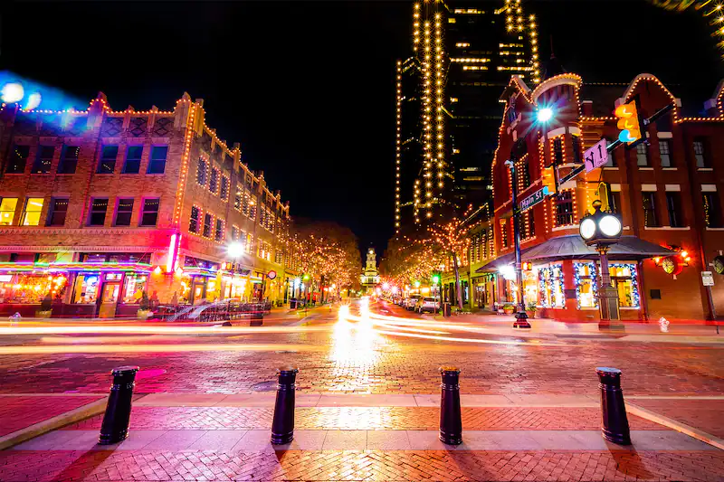
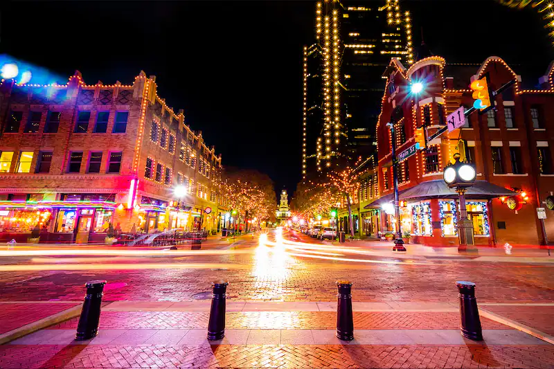

Why Dallas?
Dallas, Home To America's Team
The “America's Team” nickname for the Dallas Cowboys originated
from the team's 1978 highlight film. It was narrated by John
Facenda and he opened the film with the line, “They appear on
television so often that their faces are as familiar to the public
as presidents and movie stars. They are the Dallas Cowboys,
America's Team.” The name has since been used by several media
outlets when describing the Cowboys, including Yahoo, Sports
Illustrated, ESPN, and HBO.
-insidethestar.com
Dinning
My Favorite Restaurants In Dallas
Bellagreen
An American Bistro offering freshly prepared soups, salads, pizzas, entrees and desserts. Every item is made from scratch in the kitchen, you modify items to align with Gluten Free, Dairy Free, Vegetarian, Keto, paleo, Whole 30 and other dietary needs or preferences.
Address:
8041 Walnut Hill Ln #810
What I Like About It
They use the freshest and finest ingredients to give you the most flavor possible, including organic chickpeas, spinach, pizza dough, tomatoes, quinoa, coffee and teas.

Sweetgreen
Fresh, plant-forward, earth friendly food. With a promise to do more for the planet, by taking less. Their plant-forward menu means that they're already on average 30% less carbon intensive than the average American meal. Building healthier communities by connecting people to real food
Address:
3636 McKinney Ave
What I Like About It
This is one of the best salad spots in Dallas! Sweetgreen values the way animals are raised and is committed to the Better Chicken Commitment.

I love Juice Bar
Smoothies, juices, and bowls are made fresh every day, packed with all natural ingredients and superfoods to nourish you. smoothies, juices, and bowls are made fresh every day, packed with all natural ingredients and superfoods to nourish you. Prioritizing nutrition shouldn't mean sacrificing taste.
Address:
8018 Park Ln Ste 120
What I Like About It
This is one of the best fresh pressed juice spots in Dallas, if you go at any time of day there will be something delicious on the menu!
Gallery
My photos from Dallas
 
